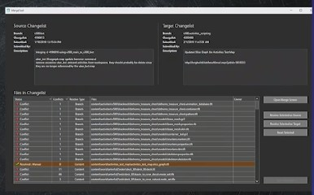

Notes for "Pipeline Support for Feature Branches in 'Destiny'" GDC2019
TLDW Summary:
How Bungie created an ecosystem of tools and workflows to allow small teams to quickly iterate on changes without worrying about breaking and blocking other teams.
Keywords
- Game Data Merging
- Version Control System
- Branch Integration
Intro
- Each P4 branch is about 4 Tb
- Up to 350 content creators, designers, and engineers working in one branch
- They use a pre-commit build pipeline - “the Gauntlet”
- Pete Kugler did a talk at GDC2016: Developing a pipeline for managing game stability
- Pipeline for managing game stability
- Describes the reason they put the pre-commit system in place
- Pete Kugler did a talk at GDC2016: Developing a pipeline for managing game stability
- They pick stability over iteration speed
- Had technical limitations of just simply adding more feature branches
- Not supported by tools
- More pressure on integration
- More pressure on build pipeline
- Couldn’t merge game data
- Definition “Feature Branch” - Branch created for teams to work in without interfering with the stability of the main branch
- Definition “Small Team” - group of cross-discipline developer working collaboratively on shared features (strike teams? )
- The development team was in an environment that would not allow risky feature prototype and development
- Long pre-commit build pipeline throughput
- Thurow QA testing
- Fear of creating blockers
- Vision
- QA had the option to use stabilization branch to shield from the auto integrations that were happening
- Had 3 main challenges:

- Focused on semantically merge content to make the lives of content creators easier
- Focused on making a simple as possible to keep branches in-sync and stable (management tools)
- Developers became accustomed to workflow build around having multiple branches per workspace
- Because of the release cycles (having multiple features in progress)
- Expected to have immediate access to things that are mapped in the workspace
- Source DCC assets in the same location as the game data
- This made for build branches
- Moving to a streamed depot was a risk that the dev team didn’t want to take
- Compromise by adapting the current system to behave like Streams
- Had plans to move to Streams for next project
Scaling the Infrastructure
- Needed to implement Centralized Branch Authority
- Which was available as part P4 Stream
- Used the build farm DB to be the Branch Authority
- Needed to implement a way to make the branches available on the build farm machines
- Asset pipeline changes
- For details checkout Brandon Moro’s talk: GDC 2018 Tools Tutorial Day: Bungie’s Asset Pipeline: ‘Destiny 2’ and Beyond
- Need to enable the scaling of the Asset Cache
- Used to be one/two machine(s) per branch
- Decoupled storage HW from the service HW
- The service was made stateless
- So service could handle different branches
- The state management was moved into Redis
- Logging was moved into elasticsearch
- To setup, branch used a lazy copy of that branch
- The branch was 4 Tb
- On the backend use deduplication to not store the same data
Implementing Content Merging
- Propper game data merging
- Needs to know the semantics of the data
- Used C# for the content merge tool (some screenshots at min 40)
- 
- Tracked auto-resolve\ conflict ratio
- Used TDD and recorded mergers that produced conflict to analyze
- at min 31 notes on how to implement merging of game data
- Were able to reach 80% auto-conflict resolution rate
Flow of changes
- Created custom tool “Team Sync” to view of a users branch state
- Shows
- Check-ins
- Bugs
- Builds in progress/finished
- For more info see GDC 2019 Tools Tutorial Day: Tooling for Small Team Workflows
- Shows
- Had a special process for automatically integrating into the main branch
- Via a build farm worker
- Had a special local conflict resolution workflow (when conflicts happened during an integration)
- After conflict resolution, automated testing would occur
- If something was broken, the team had the ability to login to a remote worker and fix the issue
- The worker would have all the dev tools ready
- If something was broken, the team had the ability to login to a remote worker and fix the issue
- All in all, Pete says that this was a great investment for the dev team
These notes are just the main ideas of the talk. They don’t contain anecdotes and examples. If you want to learn more, I would advise watching the talk on the GDC Vault.
The Toolsmiths

I took these notes as part of our little “Book Club” for GDC Vault Videos The Toolsmiths #vault club
Pete Kugler is a member of the Toolsmiths community. The Toolsmiths are a community of Game Tool Developers that are passionate about improving the way people make games.
Join us on Slack.
Join us on Twitter.
Links
Related Blog Links
Related talks
- 2016 talk by Pete Kugler - GDC 2016 Developing a pipeline for managing game stability
- GDC 2019 Tools Tutorial Day: Tooling for Small Team Workflows
- GDC 2018 Tools Tutorial Day: Shipping ‘Call of Duty’
- GDC 2018 Tools Tutorial Day: Bungie’s Asset Pipeline: ‘Destiny 2’ and Beyond
- HandmadeCon 2016 - Asset Systems and Scalability
- GDC 2019 Bungie’s Force Multipliers: Production Engineers
- GDC 2018 Teams Are Stronger Than Heroes: Bungie Development Evolved
- GDC 2018 Epic Sync: Wrangling the Work of Highly Interdependent Dev Teams at Bungie